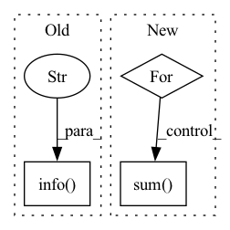

Pattern ID :26695
Before Change
result = min(results, key=lambda x: x["js_place_length"])
logger.info(f"length_true={result["js_place_length"]:.2f}")
logger.info(f"planning_time={time.time() - t_start:.2f} [s]" )
execute_plan(env, result)
After Change
)
auc_pred = auc_pred.cpu().numpy()
for threshold in [0.6, 0.4, 0.2, 0]:
keep = success_pred > threshold
if keep.sum() > 0:
break
success_pred = success_pred[keep]In pattern: SUPERPATTERN
Frequency: 3
Non-data size: 3
Instances Fragment ID: 79865223
Project Name: wkentaro/safepicking
Commit Name: ff8d814b270cd083c0295ae7f30192ca46d865f5
Time: 2021-05-28
Author: www.kentaro.wada@gmail.com
File Name: examples/reorient/learned.py
M Class Name: AnonimousClass
N Class Name: AnonimousClass
M Method Name: plan_and_execute_reorient(5)
N Method Name: plan_and_execute_reorient(5)
M Parent Class:
N Parent Class:
M File Name: examples/reorient/learned.py
N File Name: examples/reorient/learned.py
M Start Line: 30
M End Line: 142
N Start Line: 76
N End Line: 144
Before Change
// log.info("Absolute sum of weights in epoch %d for batch %d is %f" % (epoch,i,np.sum(np.array(sum_ws))))
// log.info("Loss in epoch %d for batch %d is %f" % (epoch, i, loss.item()))
log.info("+++++++" )
After Change
sum_grads = []
sum_ws = []
for p in kg_embedding_model.parameters():
// print(p.shape)
// print(torch.sum(p))
if p.grad is not None:
// print(p.grad)
sum_grads.append(torch.sum( torch.abs(p.grad)) )
sum_ws.append(torch.sum(torch.abs(p)))
sum_grads = torch.tensor(sum_grads) Fragment ID: 79865226
Project Name: pykeen/pykeen
Commit Name: 70814641d6418a72f4cba5b0f7e18c8acd2f0574
Time: 2018-09-04
Author: ali-mehdi@live.de
File Name: src/utilities/train_utils.py
M Class Name: AnonimousClass
N Class Name: AnonimousClass
M Method Name: train_trans_x_model(7)
N Method Name: train_trans_x_model(7)
M Parent Class:
N Parent Class:
M File Name: src/utilities/train_utils.py
N File Name: src/utilities/train_utils.py
M Start Line: 113
M End Line: 113
N Start Line: 34
N End Line: 107
Before Change
result = min(results, key=lambda x: x["js_place_length"])
logger.info(f"length_true={result["js_place_length"]:.2f}")
logger.info(f"planning_time={time.time() - t_start:.2f} [s]" )
execute_plan(env, result)
After Change
)
auc_pred = auc_pred.cpu().numpy()
for threshold in [0.6, 0.4, 0.2, 0]:
keep = success_pred > threshold
if keep.sum() > 0:
break
success_pred = success_pred[keep] Fragment ID: 79865225
Project Name: wkentaro/reorientbot
Commit Name: ff8d814b270cd083c0295ae7f30192ca46d865f5
Time: 2021-05-28
Author: www.kentaro.wada@gmail.com
File Name: examples/reorient/learned.py
M Class Name: AnonimousClass
N Class Name: AnonimousClass
M Method Name: plan_and_execute_reorient(5)
N Method Name: plan_and_execute_reorient(5)
M Parent Class:
N Parent Class:
M File Name: examples/reorient/learned.py
N File Name: examples/reorient/learned.py
M Start Line: 30
M End Line: 142
N Start Line: 76
N End Line: 144